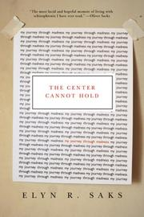

《我穿越疯狂的旅程》
书·Elyn R. Saks, 2007·The Center Cannot Hold: My Journey Through Madness

以自传理解严重精神障碍背后的完整人格与生活。
- 作者
- Elyn R. Saks
- 年份
- 2007
- 难度
- 入门
- 类型
- 传记
- 所属学派
- 现代精神病学分类
版本
- 中文版 《我穿越疯狂的旅程》 [美] Elyn R.Saks · 李慧君 / 王建平 译 · 中国轻工业出版社 · 2013 豆瓣 8.7 分（823 人评价） 豆瓣页面 ↗
- 英文版 The Center Cannot Hold: My Journey Through Madness Elyn R. Saks · Hyperion, first edition · 2007 Open Library ↗